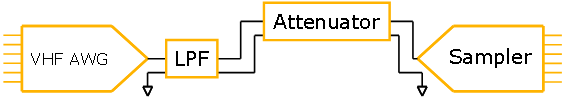
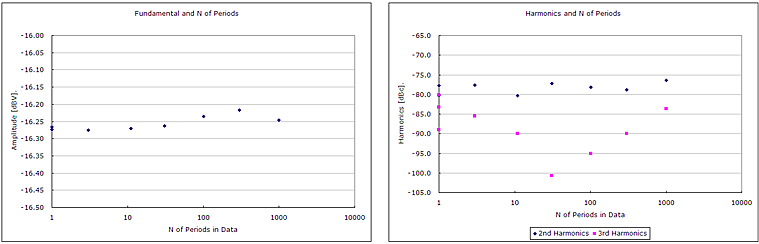
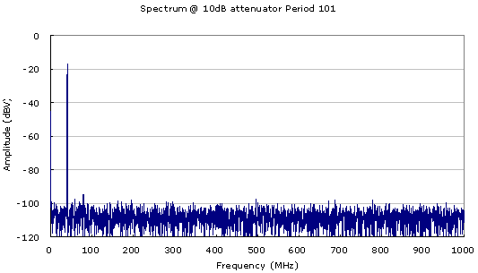
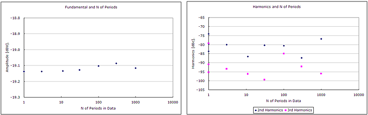
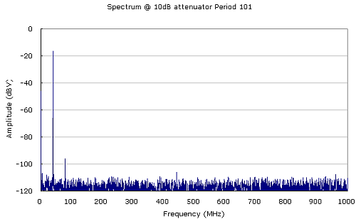
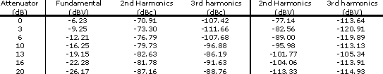
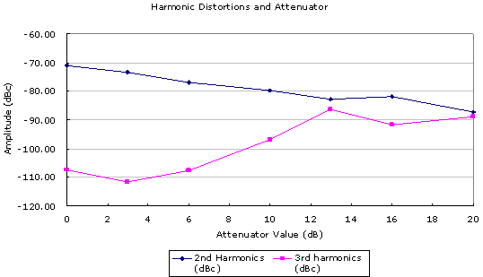
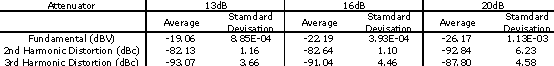
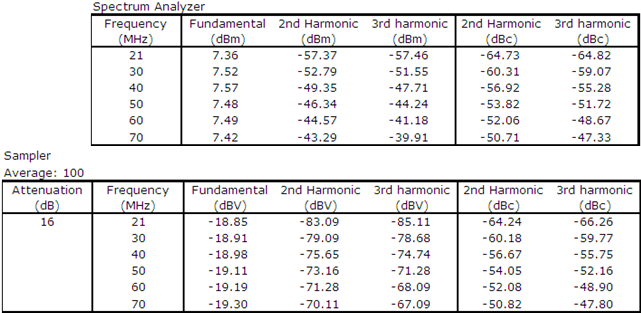
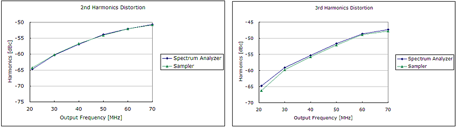

Accurate Harmonics Measurement by Sampler - Part 2
Akinori Maeda, Verigy
Paper-ID: 129022 September 2011
Abstract of Part 1
The Total Harmonic Distortion (THD) is one of the major frequency domain parameters for verifying dynamic linearity characteristics of devices like Analog to Digital Converter (ADC), Digital to Analog Converter (DAC), Amplifier and so on. Dynamic linearity characteristics of devices are varied by output frequency, and evaluated results at low frequency does not show the characteristics at high frequency. Therefore, THD must be measured at actual operating frequencies.
Measurement instrument to evaluate harmonic distortion needs to have low harmonic distortion and wide bandwidth characteristics. In general, it is difficult to realize both characteristics.
The part 1 introduced the basic measurement characteristics of Digitizer and Sampler. If Sampler has superior harmonic distortion performance, it is the best instrument to measure harmonic distortion. And then, it provided the best measurement condition of Sampler to measure correct harmonic distortion with experimental results. With attenuated measurement method described in this Part 2, these measurement conditions enable Sampler to measure correct harmonic distortion.
For details, see Accurate Harmonics Measurement by Sampler - Part 1
Attenuated Measured Results
As described in previous section, to increase harmonic distortion performance of Sampler, attenuated measurement method should be used. In this section, how much of attenuation should be applied to obtain good measurement result is discussed.

Figure 12: Configuration of the measurement
The Figure 12 shows the measurement configuration of attenuated measurement method. In this configuration, you never use the attenuator in AWG. This is because distortion characteristics of AWG may change when attenuator setting of AWG is changed. This means that distortion may occur after attenuation block of AWG.
Measurements were performed with 10 dB, 13 dB and 20 dB attenuators. Averaging must be implemented to remove noise. The purpose of this measurement is harmonic distortion measurement and averaging does not affect harmonic distortion result. It used 100 times of averaging in these measurements.
10dB Attenuator
The Figure 13 shows data at 40 MHz sampling frequency with 10 dB attenuator. The condition of this graph is same as the Figure 11.

Figure 13: Measurement Results with 10dB Attenuator
From this result, 2nd harmonics distortion is about 7 to 10dB improved, and this means that attenuated measurement method is actually effective to improve harmonic distortion performance. The Figure 14 shows one of spectrums of above data. This spectrum shows that noise level of this measurement is -100 dBV ~-110 dBV. The fundamental amplitude of this measurement is about -16 dBV, and measured harmonic distortions below 84 dBc is under noise level and they are not reliable results. To lower noise level, it must increase number of average.

Figure 14: Spectrum at 10dB attenuator
13dB Attenuator
The Figure 15 shows data at 40 MHz sampling frequency with 13 dB attenuator. The 2nd harmonic distortion of this measurement is improved a few dB than the measured result with 10 dB attenuator. But, harmonic distortions below 80 dBc are not reliable results. Therefore, no reliable data will be taken if the attenuator values are increased more than 13 dB.

Figure 15: Measurement Results with 13dB Attenuator
Increase Number of Average
Now, number of average is increased from 100 to 1000. The Figure 16 shows the spectrum at this number of average. This graph shows that noise level at 1000 times of average is less than -110 dBV.

Figure 16: Spectrum at 1000 times average with 10dB attenuator
The Table 3 and the Figure 17 show measurement results while changing attenuation value from 0 dB to 20 dB. In these measurements, number of average is 1000 and number of periods in data is 101.

Table 3: Harmonic Distortions at several Attenuation values

Figure 17: Harmonic Distortions at several Attenuator values
As shown in the Figure 16, noise level is about -110 dBV, and all of 3rd harmonic distortion results and 2nd harmonic distortion result at 20 dB attenuator are below noise level. 2nd harmonic distortion is decreased proportionally with attenuation values. After 13 dB attenuation value, 2nd harmonic distortion is not changed proportionally with attenuation values. This means that these 2nd harmonic distortions are not caused by non-linearity of Sampler.
The Table 4 shows average and standard deviation of 20 times measurements when attenuation values are 13 dB, 16 dB and 20 dB. Because the standard deviation of 2nd harmonic distortion result at 20 dB is larger than the standard deviation at 13 dB or 16 dB, it is clear that 2nd harmonic distortion at 20 dB is below noise level.

Table 4: Average and Standard Deviation at 13 dB, 16 dB and 20 dB
The 2nd harmonic distortions at 13 dB and 16 dB attenuation values are almost same and the standard deviations of these conditions are small. This means that measurement results at these conditions are correct. The measured results -82.1 dBc and -82.6 dBc are very close to the measurement result by Spectrum Analyzer, that is -85.8 dBc.
Summary
Input signal must be attenuated down to about -20dBV for correct measurement of harmonic distortions by the Sampler at 1.2V range. 16dB attenuator should be used. This increases the relative noise level and average must be performed to reduce this noise level.
Verification
Using obtained measurement conditions, several harmonic distortions of AWG output were measured. In this measurement, output frequencies were varied from 20 MHz to 70 MHz; and no LPF were used. First, AWG output signals were measured by Spectrum Analyzer. Then same AWG output signals were measured by Sampler. Measured results by Spectrum Analyzer and Sampler were compared.
In these measurements, 16 dB attenuator was used and the number of average was 100. The Table 5 and the Figure 18 shows measurement and compared results.

Table 5: AWG Output Measure Result without LPF

Figure 19: AWG Output Measure without LPF
The maximum delta of measured data by Sampler and Spectrum Analyzer is 1.5 dB of 3rd harmonic distortion @ 20 MHz. Overall, both of measured results by Sampler and Spectrum Analyzer are well matched, and it shows that obtained measurement conditions are correct.
Conclusion
The E9726A 6GHz Sampler can be used to measure harmonic distortions and measured harmonic distortion are well matched to the measurement result by Spectrum analyzer. The measurement conditions to measure correct harmonic distortion by Sampler are:
- Signal Amplitude is about -20 dBV @ 1.2 V input range (16 dB attenuation)
- Sampling frequency is close to input signal frequency
- Number of periods in data is less than 5 % of number of data